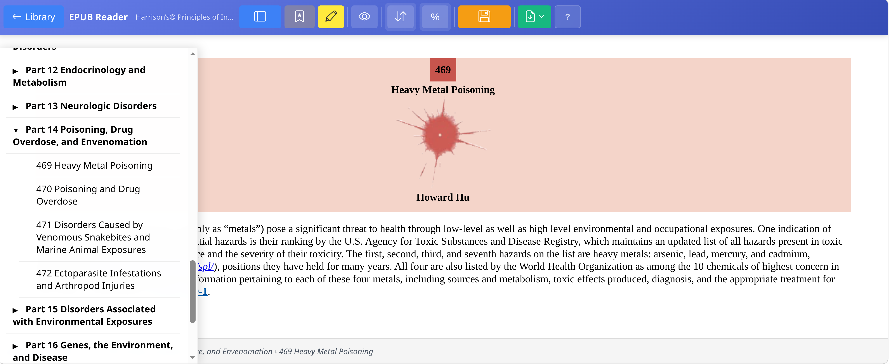
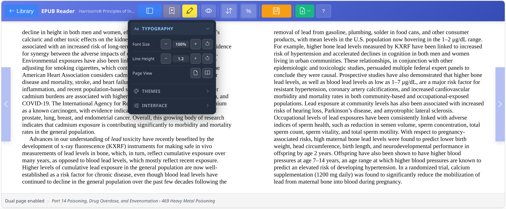
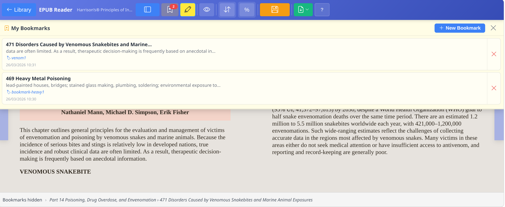

The Reader button bar
The Noesis Reading toolbar collects all reading and annotation tools. It is always visible at the top of the screen.

← Library
Returns to Noesis Library without losing the current book state. Position is restored on next opening via Save State.
Sidebar
Opens/closes the expandable hierarchical TOC. Supports up to 3 nesting levels. Click any entry to navigate directly to that section.
Bookmarks
Opens the bookmarks panel. Add a custom bookmark for the current position with title and date. Saved in localStorage.
Highlight
Dropdown with 3 colours: Yellow (general concepts), Green (examples/key points), Pink (terms/names). Also: remove all highlights. Highlights are CFI-based and survive page reload.
Display Settings
Unified accordion panel with: 15 reading themes in 5 groups, font size, line height, page width, font family, background and text colour pickers.
Scroll mode
Toggles between paginated and continuous scrolling mode. In paginated mode, use arrow keys or swipe to turn pages.
% Progress
Shows current reading progress as a percentage. Click to jump to a specific percentage in the book.
Save State
Saves the current state: chapter position, all display settings (theme, font, size, colours). State is automatically restored when you reopen the book from the library.
Extract Chapter
Main extraction button. Dropdown with two options: current chapter only, or current + all sublevels. Opens Noesis Editor in a new tab with content already loaded.
Three ways to read
Choose the mode that best suits your device and reading style. You can switch at any time with the Scroll button in the toolbar.
Single Page
One page at a time with side arrow navigation. Ideal for small screens, tablets and focused reading.
Double Page
Two side-by-side pages simulating an open book. Optimal for wide screens (>1024px). Activates automatically based on window width.
Continuous Scroll
Uninterrupted vertical flow. Ideal for immersive reading and fast scrolling. Arrow buttons are automatically hidden.
Hierarchical index
The sidebar shows the book's Table of Contents as an expandable tree up to 3 levels deep.
Chapter navigation
Click any entry in the index to navigate directly to that chapter. Position updates in real time.
Expand / Collapse
▸ = expandable node, ▾ = expanded node, • = leaf (no sub-levels).
Hierarchy depth
Supports nested TOC structures up to 3 levels — chapters, sub-chapters and specific sections all navigable.
EPUB without TOC
If the sidebar is empty, the book has no defined index. You can still navigate with arrows or in continuous scroll.

Floating navigation buttons
Left Arrow
Previous page or chapter. Hidden in scroll mode and at the first chapter of the book.
Right Arrow
Next page or chapter. Appears as a circular button on the right side of the screen.
Side click
In paginated mode: click on the left half to go back, click on the right half to go forward. Fast alternative to buttons.
Typography, themes and interface in one panel
The Display button opens a unified accordion panel with all display controls: typography, reading themes and interface colours.
Font Size
A− and A+ buttons to reduce or increase text. Range: 50%–200% of the EPUB's base size.
Line Height
≡− and ≡+ buttons for line spacing. Range: 1.0–1.8. Wider spacing improves readability on dense text.
Single Page
Forces single-column display regardless of screen width.
Double Page
Forces two-column side-by-side display simulating an open book.

15 themes in 5 groups
The Display Settings panel offers 15 predefined themes organised into 5 groups by luminosity. You can also customise background and text colours directly with the pickers.
Light
Interface settings
The Interface section in the Display Settings panel customises the colours of all interface elements and their opacity.
Toolbar Color
Background colour of the main reader toolbar.
Sidebar Color
Background colour of the TOC sidebar. Can differ from the toolbar to visually distinguish the two areas.
Nav Buttons Color
Colour of the floating navigation buttons (◀ ▶).
Nav Opacity
Slider 0–100%: adjusts the opacity of the toolbar and controls. Reduce it for a more immersive experience.
3-colour annotation system
Highlights are saved in localStorage using CFI (Canonical Fragment Identifiers) — a standardised system for referencing positions in EPUBs. They survive page reload and book reopening.
Yellow — General concepts
Ideal for key passages, main arguments, definitions.
Green — Examples and key points
For practical examples, important data, empirical evidence.
Pink — Terms and names
For technical terms, proper names, entities to remember.
None / Remove
Deactivates the active highlight. Select "None" and click on highlighted text to remove the colour.

Custom bookmarks
The bookmarks system lets you save precise positions in any book with a custom name. Bookmarks are saved in localStorage and persist between sessions.
Create a bookmark
Click the 🔖 Bookmarks button in the toolbar → the My Bookmarks panel opens → click New Bookmark. The bookmark saves the exact CFI position of the cursor in the text.
My Bookmarks panel
List of all bookmarks for the current book, ordered by creation date. Each entry shows title, surrounding text preview and date.
Go to a bookmark
Click any bookmark in the panel to navigate directly to that position in the text.
Delete a bookmark
Click the X next to the bookmark to remove it. Removal is immediate and updates the button badge.

Save State — save everything
The 💾 Save State button manually saves the current reading position and all preferences associated with the specific book.
What is saved
Exact CFI position in the text, font size, line height, page mode (single/double), reading theme, interface colours and scroll mode.
Per book
Preferences are saved per book individually in noesisLibraryDB. Each EPUB remembers its own configuration independently from others.
| localStorage key | Content | Scope |
|---|---|---|
| noesis_theme | Current selected theme name | Global |
| noesis_fontSize | Reader font size (%) | Global |
| noesis_lineHeight | Line height (1.0–1.8) | Global |
| noesis_scrollMode | "scroll" or "paginated" | Global |
| noesis_pageLayout | "single" or "double" | Global |
| noesis_toolbarColor | Toolbar colour (hex) | Global |
| noesis_sidebarColor | Sidebar colour (hex) | Global |
| noesis_bookmarks_[id] | Bookmarks array per book | Per book |
Two extraction modes
The Extract Chapter button in the toolbar opens a dropdown with two options to match the chapter structure of your book.
Current chapter only
Extracts only the chapter currently shown in the reader. Focused document, ideal for annotating a single section.
Current + all sublevels
Extracts the current chapter plus all nested sub-chapters, assembled in EPUB spine order. Ideal for broad sections.